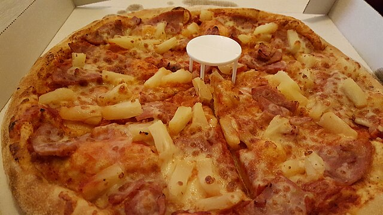
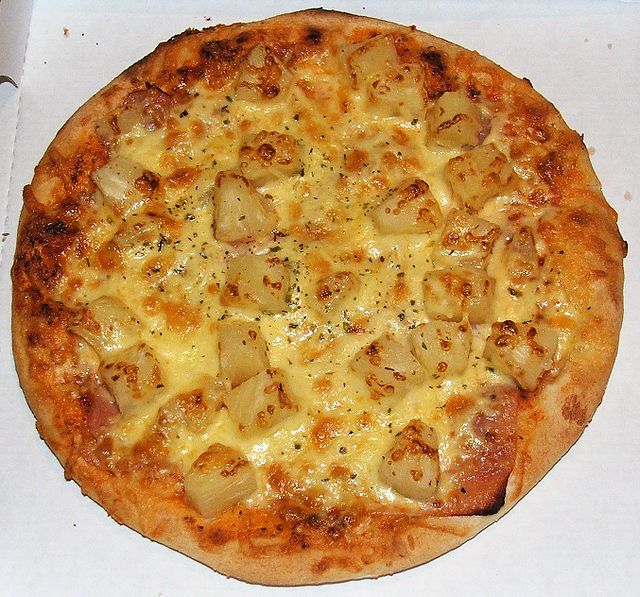

Hawaiian pizza was invented in 1962 by Sam Panopoulos, a Greek immigrant, at the Satellite Restaurant in Chatham, Ontario, Canada. Seeking to blend sweet and savory flavors, he added canned pineapple to ham, naming it after the brand of pineapple used. It has become a global staple despite being highly polarizing. Key Historical Points: Origin: Contrary to popular belief, it did not originate in Hawaii, but rather as an experiment by a Canadian restaurateur. Inspiration: Panopoulos was inspired by the sweet-and-sour flavor combinations found in Chinese-Canadian cuisine. Naming: The name "Hawaiian" was taken from the brand of canned pineapple (Hawaiian Pineapple Company) used, not the U.S. state. Controversy: The pizza is famous for being polarizing, with high-profile public debates involving figures like the President of Iceland (whoSpread: While initially not an instant hit, it became popular across Canada and subsequently worldwide, becoming a staple in Australian cuisine in the 1960s

